Arbogestion est un cabinet d'arboriste conseil basé à Cambes, dans le Lot. L'observation de terrain et les outils numériques au service de décisions éclairées pour votre patrimoine arboré.
Parlons de vos arbres Estimer mon tarif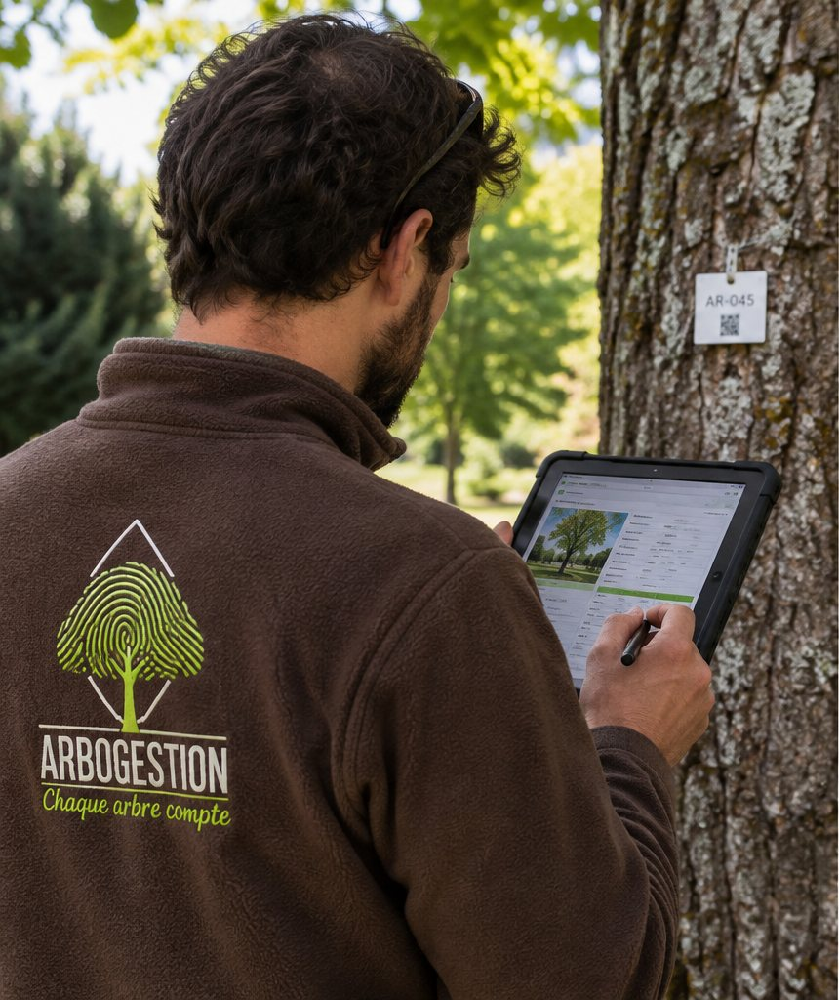
Pour les collectivités, les gestionnaires professionnels et les propriétaires privés : un arbre isolé, un parc, un domaine ou un patrimoine communal.
Identifier les essences, localiser les arbres et renseigner leurs caractéristiques.
Observer l'arbre et son environnement ; documenter son état et les points de vigilance.
Définir les interventions utiles, les priorités et les besoins de surveillance.
Actualiser les fiches et conserver l'historique des constats et des actions.
Au-delà de l'inventaire, du diagnostic et du carnet de santé de chaque arbre, Arbogestion conseille les services techniques et les élus sur la place de l'arbre en ville et sur la programmation budgétaire des travaux sur plusieurs années.
Conseil et accompagnement sur les opérations délicates : haubanage, taille de conversion, choix de la méthode d'intervention la plus respectueuse de l'arbre.
Diagnostic et prévisions d'intervention pour choisir une taille adaptée, éviter les mauvaises pratiques et les travaux qui fragilisent l'arbre.
En associant diagnostic arboricole, suivi régulier et programmation des interventions, Arbogestion aide à prévenir les risques liés aux arbres et à mieux protéger les personnes et les biens.
Une aide à la prévention, sans garantie d'absence de risque. Le suivi et la mise en œuvre des préconisations restent indispensables. Les indicateurs carbone et fraîcheur ne remplacent pas le diagnostic sanitaire et mécanique.
Le logiciel ne remplace pas l'œil de l'arboriste. Chaque arbre est observé, mesuré et documenté sur place ; les constats sont saisis directement sur tablette, rattachés à l'arbre et à sa position.
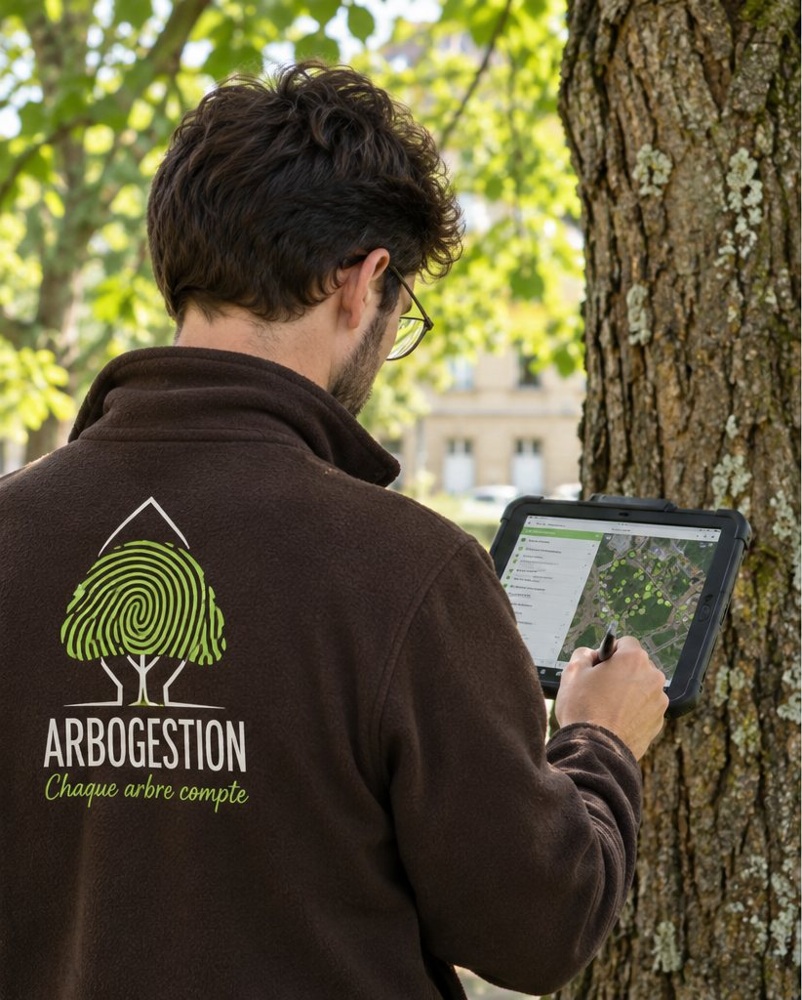
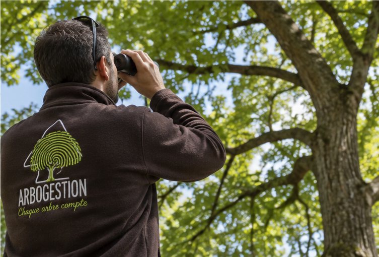
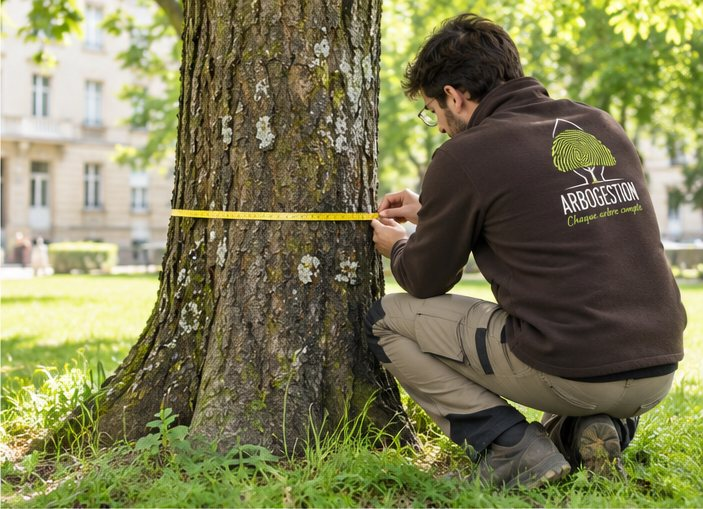
La cartographie relie la localisation, l'identification des sujets et les informations de leur carnet de santé. Le suivi numérique s'appuie sur le logiciel Grality.
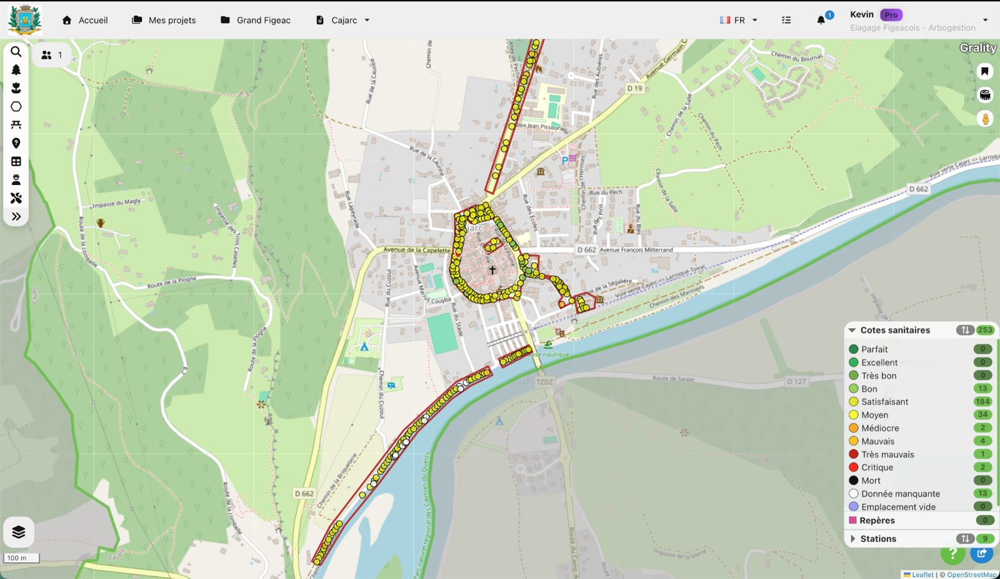
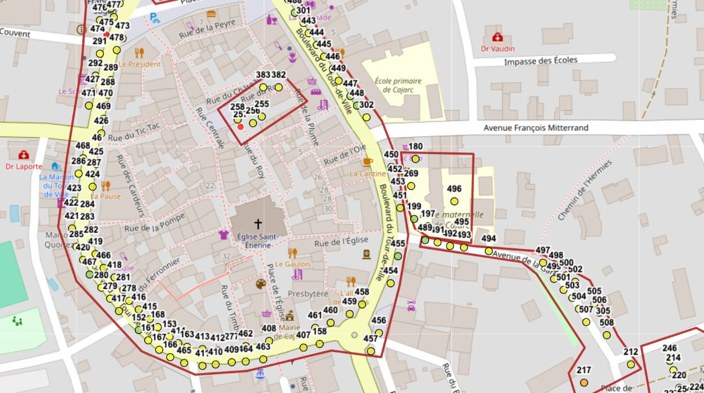
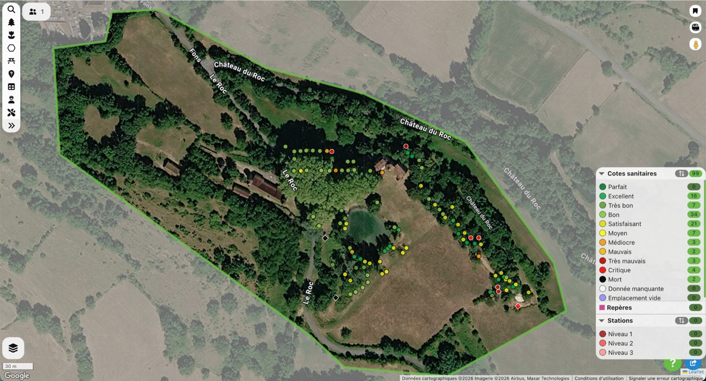
Qu'il s'agisse d'un domaine privé ou d'une commune entière, cette lecture d'ensemble constitue la base de repérage pour organiser le suivi du patrimoine arboré : chaque point est un arbre, chaque couleur un état sanitaire, chaque identifiant une fiche complète.
La valeur risque renseignée dans Grality aide à repérer les points de vigilance et à organiser les contrôles, les travaux et leur suivi.
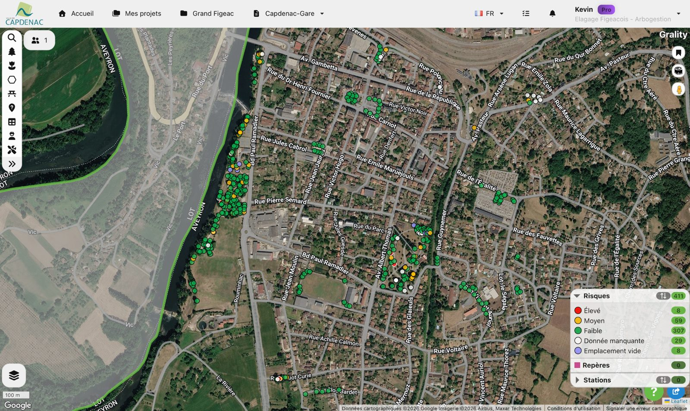
Localiser les arbres selon le niveau de risque renseigné et retrouver les points de vigilance dans leur carnet de santé.
Hiérarchiser les contrôles et les interventions selon les observations de terrain et les enjeux du site.
Préparer le calendrier des contrôles et des travaux, estimer leur budget et organiser le suivi dans la durée.
Réévaluer les priorités après de nouvelles observations ou un événement climatique, puis conserver la trace des contrôles et des interventions.
Bien plus qu'une fiche : une mémoire technique, sanitaire et patrimoniale, reliée à l'arbre cartographié.
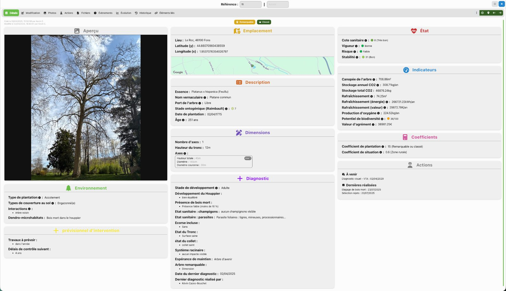
Photographie, essence, localisation, âge renseigné, dimensions et contexte de l'arbre.
Observations, vigueur, stabilité et points de vigilance documentés lors de l'examen.
Une estimation de la valeur d'agrément, complétée par les indicateurs environnementaux disponibles.
Travaux recommandés, contrôles à prévoir, dates des diagnostics et interventions enregistrées.
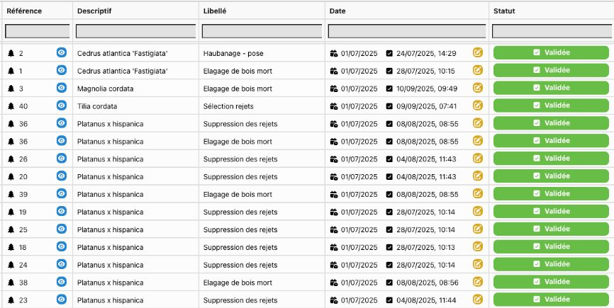
Les préconisations prennent place dans un tableau de suivi : arbre concerné, intervention, dates et statut renseigné.
Préparer les interventions et les prochains contrôles, puis retrouver les actions associées à chaque arbre.
Consulter les dates et les statuts, retrouver l'historique et exploiter les filtres ainsi que les exports Excel ou PDF.
S'appuyer sur les montants renseignés par action pour organiser la programmation des travaux.
Un constat nouveau peut conduire à actualiser le suivi. Les interventions sont définies et chiffrées distinctement, selon les besoins du site.
Deux lectures complémentaires du diagnostic, utiles pour éclairer les choix du gestionnaire : les espaces à préserver, les usages du site et les projets de plantation.
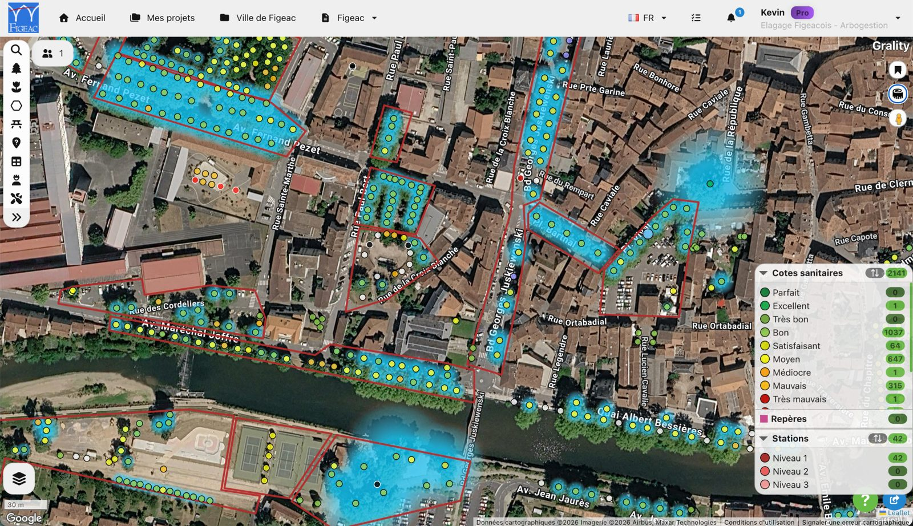
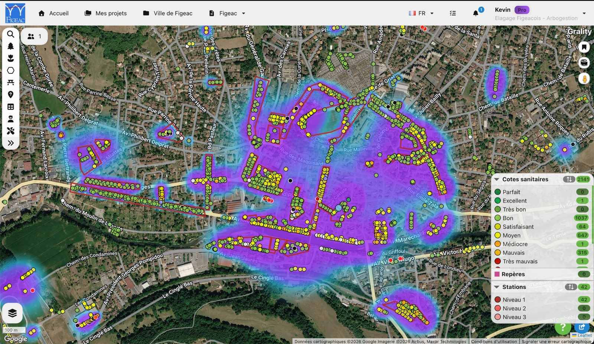
Des visualisations estimatives, issues d'un modèle. Ce ne sont ni des relevés de température en temps réel ni des mesures directes : les valeurs dépendent des données saisies et de la méthode de calcul. Elles constituent des indicateurs d'aide à la décision.
Un arbre isolé, un parc, un domaine ou un patrimoine communal : définissons ensemble un accompagnement adapté à vos enjeux.
Inventaire / Diagnostic / Préconisations / Suivi
Prestations et modalités de suivi définies sur devis. Les travaux sont chiffrés distinctement.
Arbogestion — 133 rue Madeleine Brès, 46100 Cambes.